Telefonnummer
PHONE · Kontaktfeld mit automatischen Bindestrichen
Was ist ein Telefonnummernfeld?
- 1.1Feld hinzufügen und Aufbau des Eigenschaftsbereichs
1.1Feld hinzufügen und Aufbau des Eigenschaftsbereichs
Überblick
Telefonnummer (PHONE) ist ein Eingabefeld für Kontaktnummern von Probanden · Bezugspersonen · Zuständigen. Nach dem Hinzufügen erscheint auf dem Canvas ein Eingabefeld mit dem Hinweis 010-0000-0000. Das wichtigste Merkmal ist, dass Bindestriche automatisch eingefügt werden — auch wenn der Erfasser nur Ziffern eintippt, wandelt das System die Eingabe anhand der Stellenzahl in die Form 010- 1234-5678 um.
Bildschirmbeschreibung
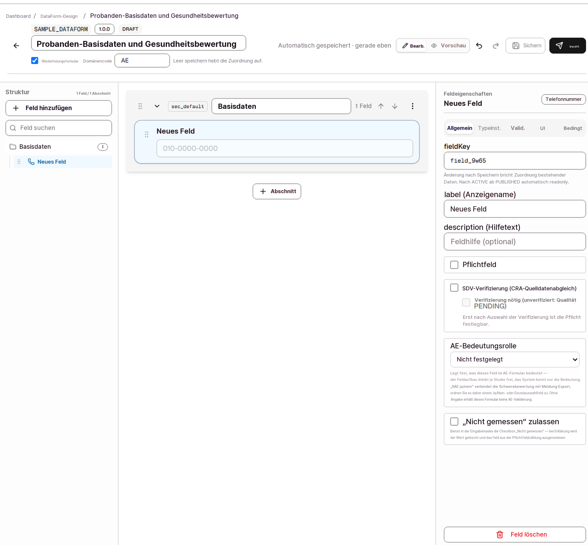
[+ Feld hinzufügen] — Wenn Sie hier den Typ festlegen, wird das Feld erstellt.
Im Strukturbaum wird ein neues Feld hinzugefügt. Das Symbol hat die Form eines Telefonhörers.
Auf dem WYSIWYG-Canvas erscheint das Eingabefeld mit dem Hinweis 010-0000-0000. Diesen Text können Sie im Tab „UI“ ändern. 5.4
fieldKey — der tatsächliche Schlüssel, unter dem der Wert gespeichert wird. 2.1
label (Anzeigename) · description (Hilfetext) — der auf dem Bildschirm angezeigte Name und die ergänzende Beschreibung. 2.1
Pflichtfeld · SDV-Verifizierung — werden in 2.2 · 2.3 behandelt.
AE-Bedeutungsrolle — Wie der Bildschirmhinweis angibt, ist sie für Ja/Nein- oder Einzelauswahlfelder vorgesehen; bei diesem Typ wird sie daher nicht festgelegt.
„Nicht gemessen“ zulassen — wird in 2.4 behandelt.
Typ-Badge „Telefonnummer“ — der Typ des ausgewählten Felds. Nach dem Hinzufügen kann er nicht mehr geändert werden.
5 Eigenschafts-Tabs — Allgemein · Typeinstellungen · Validierung · UI · Bedingt. Die Kapitel 2–6 dieses Handbuchs entsprechen den einzelnen Tabs.
Zu beachten
Unbedingt prüfen Datenschäden · Formular nicht abschließbar
- • ⛔ Telefonnummern sind personenbezogene Daten. Da sie zur Identifizierung von Probanden führen können, werden sie je nach Rolle maskiert angezeigt — „Maskierung ON“ oben auf dem Bildschirm kennzeichnet dies. Erfassen Sie nur unbedingt nötige Kontaktnummern und vermerken Sie im Hilfetext, wozu sie benötigt werden. 2.1
- • Der Typ kann nach dem Hinzufügen nicht geändert werden, und nach der Veröffentlichung (PUBLISH) kann die Struktur selbst nicht mehr geändert werden. Haben Sie falsch gewählt, löschen Sie das Feld und fügen Sie es erneut hinzu.
Leicht missverständliches Verhalten
- • Bindestriche werden automatisch eingefügt. Sie müssen Erfasser nicht anweisen, „mit - einzugeben“ — auch wenn nur Ziffern eingetippt werden, fügt das System sie ein. Da der gespeicherte Wert die Bindestriche jedoch ebenfalls enthält, ist beim Erstellen von Validierungsregeln Vorsicht geboten. 4.2
Tab „Allgemein“ — Name · Pflicht · Verifizierung · Nicht gemessen
- 2.1fieldKey · Anzeigename · Hilfetext
- 2.2Pflichtfeld
- 2.3SDV-Verifizierung (CRA-Quelldatenabgleich)
- 2.4„Nicht gemessen“ zulassen
2.1fieldKey · Anzeigename · Hilfetext
Überblick
Der Bereich, in dem Sie den Namen des Felds festlegen. Der Speicherschlüssel (fieldKey) und der auf dem Bildschirm angezeigte Name (label) sind unterschiedliche Werte, und der Zeitpunkt, bis zu dem sie geändert werden dürfen, ist verschieden. Bei Kontaktnummern muss klar sein, wessen Nummer es ist; geben Sie den Anzeigenamen daher konkret an.
Bildschirmbeschreibung
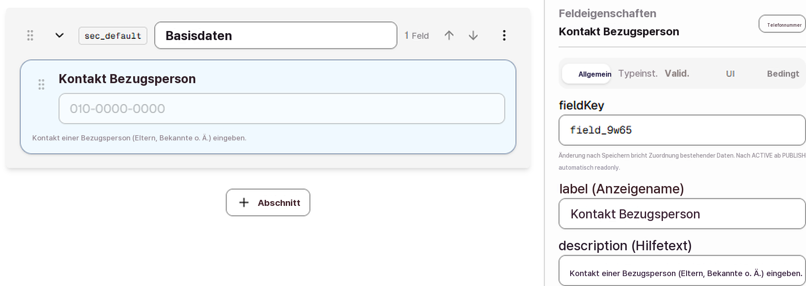
label (Anzeigename) — Geben Sie den Namen des Elements ein, der in der Eingabemaske angezeigt wird.
Erscheint als Feldtitel auf dem Canvas.
description (Hilfetext) — Geben Sie die ergänzende Beschreibung ein, die unter dem Anzeigenamen erscheint. Bleibt sie leer, wird nichts angezeigt.
Erscheint als graue Schrift unter dem Eingabefeld. In der Aufnahme lautet er „Kontakt einer Bezugsperson (Eltern, Bekannte o. Ä.) eingeben.“
fieldKey — der tatsächliche Schlüssel, unter dem der Wert gespeichert wird. Beim Hinzufügen eines Felds wird er automatisch vergeben, z. B. field_9w65; wie der Bildschirmhinweis sagt: „Änderung nach Speichern bricht Zuordnung bestehender Daten“.
Zu beachten
Unbedingt prüfen Datenschäden · Formular nicht abschließbar
- • Geben Sie im Anzeigenamen an, wessen Nummer es ist. Mit „Kontakt“ allein ist nicht erkennbar, ob es um den Probanden selbst oder um eine Bezugsperson geht, und im selben Feld vermischen sich Nummern verschiedener Personen. Schreiben Sie wie in der Aufnahme „Kontakt Bezugsperson“.
- • Geben Sie im Hilfetext an, in welcher Situation die Nummer verwendet wird. Je nachdem, ob sie für Notfälle oder für Besuchshinweise dient, notiert der Erfasser eine andere Nummer.
- • Ändern Sie fieldKey nach dem Speichern nicht. Die Verbindung zu bereits eingegebenen Daten geht verloren, und Validierungsregeln 4.3 und bedingte Anzeigen Kap. 6, die auf dieses Feld verweisen, funktionieren ebenfalls nicht mehr.
Leicht missverständliches Verhalten
- • Der Anzeigename (label) kann jederzeit geändert werden. Gespeicherte Werte sind davon nicht betroffen.
2.2Pflichtfeld
Überblick
Legt fest, ob das Formular nur abgeschlossen werden kann, wenn dieses Feld ausgefüllt ist. Kontaktnummern sind Elemente, die fehlen oder nicht mitgeteilt werden können; legen Sie daher vor der Festlegung als Pflichtfeld zuerst fest, wie solche Fälle erfasst werden. 2.4
Bildschirmbeschreibung
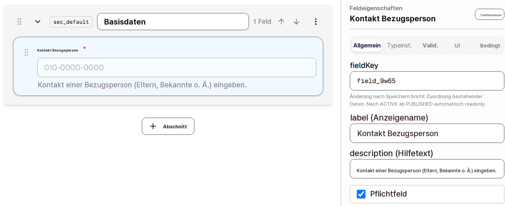
*Pflichtfeld — Wenn aktiviert, wird dieses Feld zum Pflichtfeld.
Auf dem Canvas erscheint rechts neben dem Anzeigenamen ein rotes *.
label · description — die in 2.1 eingegebenen Werte werden unverändert angezeigt.
Zu beachten
Unbedingt prüfen Datenschäden · Formular nicht abschließbar
- • ⛔ Ist die Kontaktnummer ein Pflichtfeld, tragen Erfasser beliebige Nummern ein. Dass keine Bezugsperson existiert oder die Nummer nicht mitgeteilt wird, kommt tatsächlich vor — wenn Sie das Feld als Pflichtfeld festlegen, aktivieren Sie unbedingt zusätzlich die Erklärung „Nicht gemessen“ 2.4.
- • Ob das Format stimmt, hat mit der Pflichteinstellung nichts zu tun. Die Pflicht prüft nur, ob das Feld nicht leer ist — auch bei fehlenden Stellen wird sie erfüllt. Um das Format zu erzwingen, verwenden Sie Validierungsregeln. 4.2
- • Ausgeblendete Felder sind von der Pflichtprüfung ausgenommen. Solange ein Feld über die bedingte Anzeige Kap. 6 verborgen ist, wird das Formular auch dann abgeschlossen, wenn das Pflichtfeld leer ist.
Hinweis
- • Ist „Nicht gemessen“ zulassen aktiviert und gibt der Erfasser die Erklärung ab, kann das Formular auch bei einem Pflichtfeld abgeschlossen werden. 2.4
2.3SDV-Verifizierung (CRA-Quelldatenabgleich)
Überblick
SDV (Source Data Verification) ist das Verfahren, bei dem der Monitor (CRA) die eingegebenen Werte mit den Quelldaten der Prüfstelle abgleicht. Hier legen Sie fest, ob dieses Feld Gegenstand dieses Abgleichs ist. Diese Einstellung ist bei allen Feldtypen gleich, daher ist auch der Bildschirm unabhängig vom Typ identisch.
Bildschirmbeschreibung


SDV-Verifizierung (CRA-Quelldatenabgleich) — Wenn aktiviert, wird dieses Feld in die Abgleichliste des CRA aufgenommen.
Mit der Aktivierung wird das Unterelement aktiv.
Verifizierung erforderlich (unverifiziert: Qualität PENDING) — kann erst festgelegt werden, nachdem ① aktiviert wurde. Wenn aktiviert, bleibt der Qualitätsstatus der betreffenden Daten auf PENDING, bis der CRA den Abgleich abgeschlossen hat.
Bevor ① aktiviert ist, ist ② ausgegraut und inaktiv. Wie der Bildschirmhinweis sagt: „Erst nach Auswahl der Verifizierung ist die Pflicht festlegbar.“
Zu beachten
Unbedingt prüfen Datenschäden · Formular nicht abschließbar
- • ⛔ Entscheiden Sie sorgfältig, ob Sie eine Kontaktnummer als SDV-Ziel festlegen. Für den Abgleich muss der CRA die unmaskierte Nummer sehen; Telefonnummern sind jedoch personenbezogene Daten und werden je nach Rolle maskiert. Prüfen Sie zuerst, ob der Abgleich für diese Kontaktnummer wirklich nötig ist. 1.1
- • Wird der Wert geändert, wird die Verifizierung aufgehoben. Wird die Nummer korrigiert, kehrt der Qualitätsstatus zu PENDING zurück, und der CRA muss erneut abgleichen.
Leicht missverständliches Verhalten
- • SDV kann nicht von der Person durchgeführt werden, die die Daten eingegeben hat. Das System erzwingt eine Kreuzprüfung (Cross-User SoD); eingebende und verifizierende Person müssen daher zwingend verschieden sein.
Hinweis
- • Der Qualitätsstatus durchläuft PENDING → VERIFIED → CLEAN. Ist auch nur ein Feld mit Verifizierungspflicht unverifiziert, können die betreffenden Daten nicht CLEAN werden.
2.4„Nicht gemessen“ zulassen
Überblick
Eine Funktion, mit der Fälle, in denen die Antwort nicht feststellbar ist, als eigener Wert erfasst werden. Bei Kontaktnummern sind „noch nicht gefragt“ und „gefragt, aber nicht mitgeteilt“ völlig verschiedene Situationen; bleibt das Feld leer, lassen sich beide nicht unterscheiden — diese Erklärung trennt sie.
Bildschirmbeschreibung

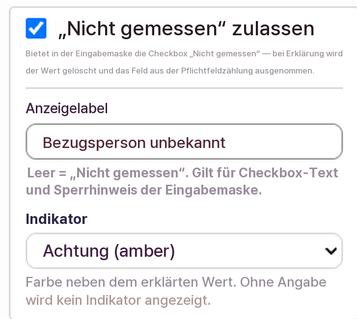
„Nicht gemessen“ zulassen — Wenn aktiviert, erscheint in der Eingabemaske die Checkbox „Nicht gemessen“, und die beiden folgenden Elemente werden angezeigt.
Anzeigelabel — Bleibt es leer, gilt der Standardwert „Nicht gemessen“.
Ändern Sie ihn auf Bezugsperson unbekannt, gilt dieser Text sowohl für die Checkbox in der Eingabemaske als auch für den Sperrhinweis.
Indikator — Standardwert ist Keine.
Wenn Sie ihn auf Achtung (amber) ändern, erscheint neben dem erklärten Wert eine Markierung in dieser Farbe.
Zu beachten
Unbedingt prüfen Datenschäden · Formular nicht abschließbar
- • ⛔ Bei Kontaktnummern ist diese Erklärung besonders nötig. Ist sie nicht aktiviert, tragen Erfasser Scheinnummern wie
010-0000-0000ein, und da dieser Wert formal korrekt ist, wird er von keiner Validierung erfasst. - • Bei der Erklärung wird der Wert gelöscht. Wie der Bildschirmhinweis sagt — „bei Erklärung wird der Wert gelöscht und das Feld aus der Pflichtfeldzählung ausgenommen.“
Leicht missverständliches Verhalten
- • Erklärte Felder werden aus der Pflichtfeldzählung ausgenommen. Das Formular kann daher auch bei einem Pflichtfeld abgeschlossen werden.
Hinweis
- • Ohne festgelegten Indikator wird die Farbmarkierung nicht angewendet. Wenn eine Hervorhebung nötig ist, wählen Sie z. B. Achtung (amber).
Tab „Typeinstellungen“ — ein Typ ohne eigene Einstellungen
- 3.1Gesamtaufbau des Tabs „Typeinstellungen“
- 3.2Standardwert (defaultValue)
3.1Gesamtaufbau
Überblick
Telefonnummer ist ein Typ ohne typeigene Einstellungen, da kein Format gewählt werden muss — die Regel, nach der anhand der Stellenzahl Bindestriche eingefügt werden, ist bereits festgelegt. In diesem Tab bleiben daher nur eine Hinweiszeile und die beiden Elemente, die bei allen Typen gemeinsam vorhanden sind.
Bildschirmbeschreibung
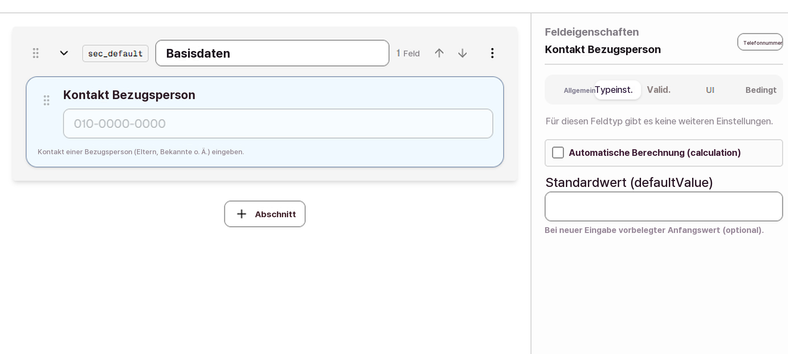
Standardwert (defaultValue) — der Wert, der bei einer neuen Eingabe vorbelegt wird. Anfangs ist er leer. 3.2
Bildschirmhinweis — „Für diesen Feldtyp gibt es keine weiteren Einstellungen.“ Elemente wie zulässige Stellenzahl · Ortsvorwahl · Länderauswahl können nicht festgelegt werden.
Automatische Berechnung (calculation) — das Element wird angezeigt, wird bei diesem Typ aber nicht verwendet, da eine Telefonnummer nicht per Formel berechnet wird.
Typ-Badge „Telefonnummer“ — der Typ des gerade eingestellten Felds.
Eigenschafts-Tabs — aktuell ist der Tab Typeinstellungen geöffnet.
Zu beachten
Unbedingt prüfen Datenschäden · Formular nicht abschließbar
- • ⛔ Es gilt nur das koreanische Format. Müssen ausländische Nummern erfasst werden, passt die Stellenzahl nicht, und Bindestriche werden an falschen Stellen eingefügt. Legen Sie solche Elemente nicht mit diesem Typ, sondern als einzeiligen Text an.
Leicht missverständliches Verhalten
- • Das Format legt das System fest. Während Ziffern eingetippt werden, wird die Eingabe für Seoul (02) in die Form
02-123-4567·02-1234-5678und sonst in die Form010-123-4567·010-1234-5678gebracht. Formularersteller können dies nicht ändern. - • Wenn Sie die Stellenzahl erzwingen möchten, verwenden Sie den Tab „Validierung“. Da der gespeicherte Wert jedoch Bindestriche enthält, ist bei der Formulierung Vorsicht geboten. 4.2
Hinweis
- • Ein Element zur Auswahl des Ländercodes gibt es auf dem Bildschirm nicht. Im System ist es zwar definiert, in der Erstellungsansicht wird es jedoch nicht angeboten. (※ 7.2)
3.2Standardwert (defaultValue)
Überblick
Legt die Nummer fest, die bei einer neuen Eingabe vorbelegt wird. Anfangs ist sie leer. Anders als bei anderen Typen ist sie direkt in der Bearbeitungsansicht sichtbar — der Wert erscheint im Eingabefeld auf dem Canvas, ohne dass Sie zur Vorschau wechseln müssen.
Bildschirmbeschreibung
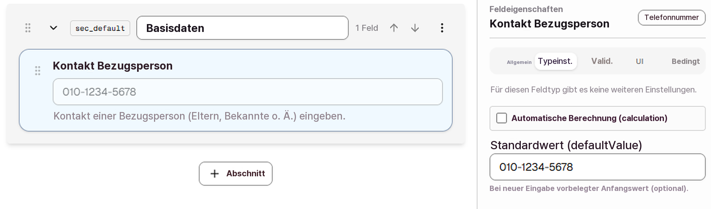
Standardwert (defaultValue) — Geben Sie die vorzubelegende Nummer ein. In der Aufnahme 010-1234-5678.
Im Eingabefeld auf dem Canvas erscheint genau diese Nummer. Anders als bei Wahr/Falsch · Einzelauswahl können Sie dies prüfen, ohne zur [Vorschau] zu wechseln.
Automatische Berechnung (calculation) — wird bei diesem Typ nicht verwendet. 3.1
Zu beachten
Unbedingt prüfen Datenschäden · Formular nicht abschließbar
- • ⛔ Legen Sie für Kontaktnummern keinen Standardwert fest. Auch wenn der Erfasser nichts prüft, ist bereits eine Nummer eingetragen, sodass die Nummer einer anderen Person gespeichert werden kann. In Daten klinischer Studien ist dies kein einfacher Tippfehler, sondern ein Vorfall, bei dem personenbezogene Daten falsch erfasst werden. 1.1
- • ⛔ Eine Beispielnummer als Standardwert einzutragen ist besonders riskant. Ein Wert wie
010-1234-5678ist formal korrekt, wird von keiner Validierung erfasst und unverändert gespeichert. Lassen Sie das Feld möglichst leer. - • Ein Feld mit Standardwert besteht die Pflichtprüfung, auch wenn der Erfasser es nicht anrührt. Seien Sie besonders vorsichtig, wenn Sie es zusammen mit Pflichtfeld 2.2 verwenden.
Leicht missverständliches Verhalten
- • Auch bei einer als Standardwert eingegebenen Nummer werden die Bindestriche automatisch angepasst angezeigt.
Tab „Validierung“ — Wertprüfung vor dem Speichern
- 4.1Ohne Validierungsregeln
- 4.2Regel hinzufügen
- 4.3Fertig erstellte Regel — Vergleich mit anderem Feld
4.1Ohne Validierungsregeln
Überblick
Der Tab, in dem Regeln gesammelt werden, die vor dem Speichern prüfen, ob ein Wert die Bedingungen erfüllt. Bei Telefonnummern werden zwar automatisch Bindestriche eingefügt, aber auch bei fehlenden Stellen wird der Wert unverändert gespeichert — um das Format zu erzwingen, müssen Sie in diesem Tab eine Regel erstellen.
Bildschirmbeschreibung
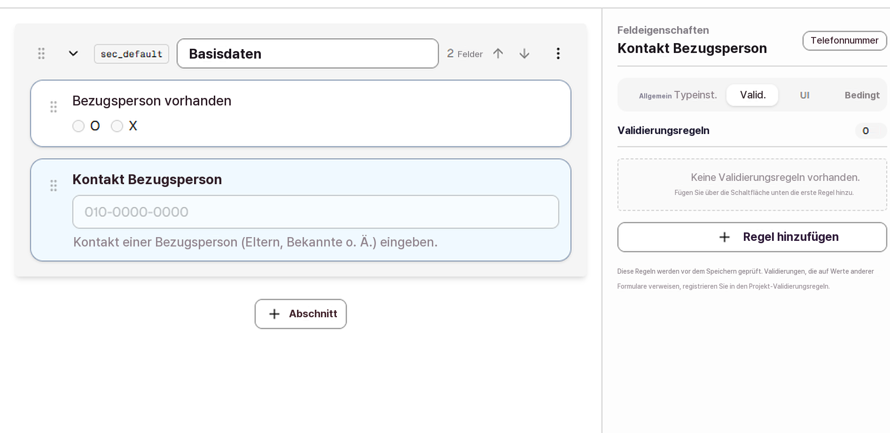
[+ Regel hinzufügen] — erstellt die erste Regel. Der Bildschirm nach der Auswahl wird in 4.2 erläutert.
Bereich Validierungsregeln und Anzahl der registrierten Regeln. Anfangs 0 Regeln.
Ohne Regeln erscheint der Hinweis „Keine Validierungsregeln vorhanden. Fügen Sie über die Schaltfläche unten die erste Regel hinzu.“
Hinweis unten — „Diese Regeln werden vor dem Speichern geprüft. Validierungen, die auf Werte anderer Formulare verweisen, registrieren Sie in den Projekt-Validierungsregeln.“
Zu beachten
Unbedingt prüfen Datenschäden · Formular nicht abschließbar
- • ⛔ Der automatische Bindestrich ist keine Formatprüfung. Auch bei fehlenden Stellen wie
010-12wird gespeichert — dass Bindestriche eingefügt wurden, bedeutet nicht, dass die Nummer korrekt ist. Um eine vollständige Nummer zu verlangen, ist eine Regel nötig. 4.2 - • ⛔ Validierungen, die auf Werte anderer Formulare verweisen, können hier nicht erstellt werden. Registrieren Sie solche Regeln im Bildschirm „Projekt-Validierungsregeln“.
- • Der Tab „Validierung“ ist nicht nach Typ eingeschränkt. Da auch Regeln wählbar sind, die nicht zu Telefonnummern passen, müssen Sie selbst prüfen, ob die gewählte Regel für diesen Typ sinnvoll ist. 4.2
Leicht missverständliches Verhalten
- • In der Aufnahme gibt es zwei Felder: „Bezugsperson vorhanden“ (Einzelauswahl) und „Kontakt Bezugsperson“ — da von der Antwort im ersten Feld abhängt, ob die Kontaktnummer eingegeben werden darf, wird in 4.3 eine Regel erstellt, die beide Felder verknüpft.
4.2Regel hinzufügen
Überblick
Wenn Sie in 4.1 [+ Regel hinzufügen] wählen, wird der Block Regel 1 erstellt. Anfangs ist „Wertebereich“ eingestellt; da eine Telefonnummer jedoch keine Zahl, sondern eine Zeichenkette mit Bindestrichen ist, ist kein Größenvergleich möglich — stellen Sie auf „Format (Regex)“ oder „Vergleich mit anderem Feld“ um.
Bildschirmbeschreibung
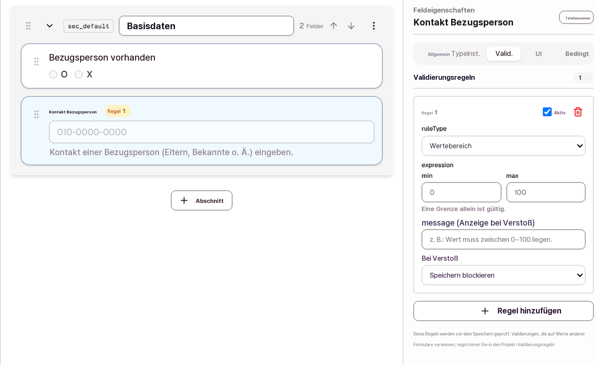
[+ Regel hinzufügen] — erstellt eine weitere Regel. (Dieselbe Schaltfläche, die Sie in 4.1 gewählt haben.)
Neben dem Anzeigenamen auf dem Canvas erscheint das Badge „Regel 1“.
Die Regelanzahl ändert sich auf 1 Regel.
Checkbox Aktiv und Symbol Löschen — Sie können die Regel vorübergehend aussetzen, ohne sie zu löschen.
ruleType — die Art der Regel. Direkt nach dem Erstellen ist „Wertebereich“ eingestellt; ändern Sie sie auf die gewünschte Regel.
min — das Feld für die Untergrenze, das bei Auswahl von Wertebereich erscheint.
max — das Feld für die Obergrenze, das unter derselben Bedingung erscheint.
message (Anzeige bei Verstoß) — der Text, der Benutzern bei einem Regelverstoß angezeigt wird.
Bei Verstoß — Wählen Sie Speichern blockieren oder Warnung. (Je nach ruleType ist die Auswahl teils nicht möglich — 4.3)
Die blasse Schrift 0 · 100 und „Eine Grenze allein ist gültig.“ sind Hinweise zum Wertebereich und keine eingestellten Werte.
Zu beachten
Unbedingt prüfen Datenschäden · Formular nicht abschließbar
- • ⛔ Schreiben Sie den regulären Ausdruck einschließlich der Bindestriche. Gespeichert wird nicht nur eine Ziffernfolge, sondern eine Zeichenkette mit Bindestrichen (
010-1234-5678). Ein Ausdruck, der nur Ziffern annimmt (^01[0-9]{8,9}$), lehnt auch alle korrekten Eingaben ab — schreiben Sie ihn wie^01\d-\d{3,4}-\d{4}$mit den Positionen der Bindestriche. - • ⛔ Verwenden Sie „Wertebereich“ · „Dezimalstellen“ nicht. Eine Telefonnummer ist keine Zahl, sondern eine Zeichenkette; weder Größe noch Dezimalstellen sind sinnvoll. Der Bildschirm lässt die Auswahl dennoch zu, daher müssen Formularersteller dies selbst ausschließen.
- • Wenn auch Nummern aus Seoul erfasst werden, fassen Sie den Ausdruck weiter.
02-123-4567hat eine zweistellige Vorwahl und wird daher von einem Ausdruck abgelehnt, der nur Mobilnummern annimmt. 3.1 - • Bleibt message leer, wissen Benutzer nicht, warum gesperrt wurde. Geben Sie unbedingt einen Text ein.
4.3Fertig erstellte Regel — Vergleich mit anderem Feld
Überblick
Wenn Sie ruleType auf Vergleich mit anderem Feld ändern, wird mit dem Wert eines anderen Felds im selben Formular verglichen. So lassen sich Beziehungen abbilden, bei denen die Antwort auf eine vorherige Frage bestimmt, ob eine Eingabe zulässig ist, etwa „Kontaktnummer nur erfassen, wenn angegeben wurde, dass eine Bezugsperson vorhanden ist“.
Bildschirmbeschreibung
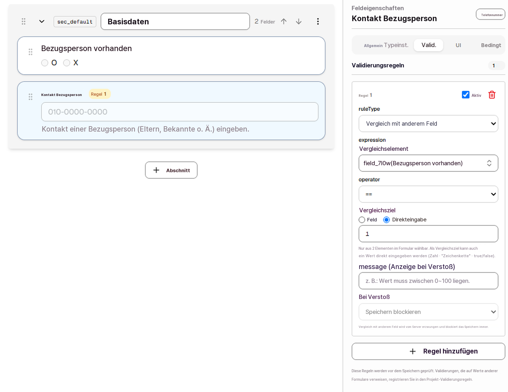
1 ist — message ist leerruleType = Vergleich mit anderem Feld — Wenn ausgewählt, werden die Felder darunter für den Vergleich umgestellt.
Vergleichselement — Wählen Sie ein anderes Feld im selben Formular. In der Aufnahme field_7l0w(Bezugsperson vorhanden), ein Einzelauswahlfeld.
operator — die Vergleichsart. In der Aufnahme == (gleich).
Vergleichsziel — Wählen Sie zwischen Feld und Direkteingabe. In der Aufnahme wurde per Direkteingabe 1 eingetragen — der gespeicherte Wert von „Bezugsperson vorhanden“.
message (Anzeige bei Verstoß) — in der Aufnahme leer. Die graue Schrift „z. B.: Wert muss zwischen 0~100 liegen.“ ist ein Eingabebeispiel und kein eingestellter Wert.
Bei Verstoß — grau und inaktiv. Wie der Bildschirmhinweis sagt: „Vergleich mit anderem Feld wird vom Server erzwungen und blockiert das Speichern immer.“ — bei dieser Regel kann keine Warnung gewählt werden; sie ist auf Speichern blockieren festgelegt.
Bildschirmhinweis — „Nur aus 2 Elementen im Formular wählbar. Als Vergleichsziel kann auch ein Wert direkt eingegeben werden (Zahl · "Zeichenkette" · true/false).“
Zu beachten
Unbedingt prüfen Datenschäden · Formular nicht abschließbar
- • ⛔ In der Aufnahme ist message leer — veröffentlichen Sie nicht in diesem Zustand. Bei Verstoß ist für diese Regel auf Speichern blockieren festgelegt; fehlt der Text, ist das Speichern für den Erfasser blockiert, ohne dass er den Grund erfährt. Tragen Sie unbedingt einen Text ein, etwa „Eingabe nur möglich, wenn eine Bezugsperson vorhanden ist.“
- • ⛔ Als Vergleichsziel tragen Sie nicht den angezeigten Text, sondern den gespeicherten Wert ein. „Bezugsperson vorhanden“ in der Aufnahme erscheint auf dem Bildschirm als
O·X, der gespeicherte Wert ist jedoch1. Prüfen Sie dies zuerst in der Optionsliste des referenzierten Felds.
Leicht missverständliches Verhalten
- • Diese Regel kann nicht als Warnung eingestellt werden. Verwenden Sie sie nur für Beziehungen, die unbedingt verhindert werden müssen. Wenn Sie nur informieren möchten, ist es besser, über die bedingte Anzeige Kap. 6 gar nicht erst danach zu fragen.
- • Ist dieses Feld leer, wird die Regel nicht geprüft. Fehlende Eingaben zu verhindern ist Aufgabe von Pflichtfeld 2.2.
Tab „UI“ — Bildschirmanordnung und Hinweistexte
- 5.1Gesamtaufbau des Tabs „UI“
- 5.2Layoutbreite
- 5.3Schreibgeschützt · Ausblenden
- 5.4placeholder · helpText
5.1Gesamtaufbau
Überblick
Der Tab, in dem Sie nicht den Wert selbst, sondern Anordnung und Hinweise auf dem Bildschirm festlegen. Die Einstellungen in diesem Tab ändern die gespeicherten Daten selbst nicht. Bei Telefonnummern funktioniert placeholder ordnungsgemäß, daher gibt es zwei Stellen für Hinweistexte. 5.4
Bildschirmbeschreibung
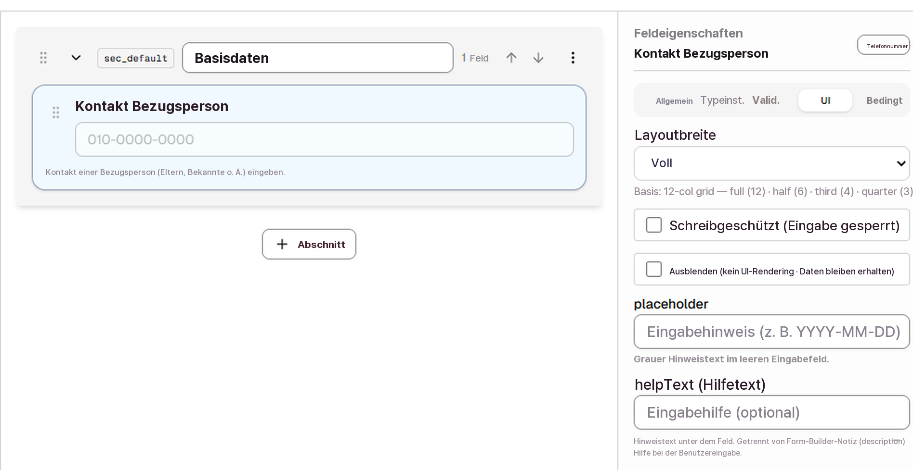
Layoutbreite — die Breite, die dieses Feld in einer Formularzeile einnimmt. 5.2
Schreibgeschützt (Eingabe gesperrt) — zeigt das Feld an, verhindert aber Änderungen. 5.3
Ausblenden (kein UI-Rendering · Daten bleiben erhalten) — verbirgt das Feld auf dem Bildschirm. 5.3
placeholder — der graue Hinweistext im Eingabefeld. Ohne Angabe gilt 010-0000-0000. 5.4
helpText (Hilfetext) — der Hinweistext, der unter dem Feld angezeigt wird. 5.4
Typ-Badge „Telefonnummer“
Zu beachten
Unbedingt prüfen Datenschäden · Formular nicht abschließbar
- • ⛔ Ausblenden löscht gespeicherte Nummern nicht. Sie werden nur auf dem Bildschirm verborgen; der Wert bleibt erhalten und ist in Export und Audit-Trail enthalten. 5.3
Leicht missverständliches Verhalten
- • Die Einstellungen in diesem Tab ändern gespeicherte Werte nicht. Nur Anordnung und Hinweise ändern sich.
- • Auch wenn placeholder leer bleibt, wirkt das Eingabefeld nicht leer, da standardmäßig
010-0000-0000eingetragen ist. 5.4
Hinweis
- • Verwenden Sie Schreibgeschützt und Ausblenden nicht zusammen. Ausblenden hat Vorrang, die Einstellung Schreibgeschützt bleibt dann wirkungslos. 5.3
5.2Layoutbreite
Überblick
Legt fest, welche Breite dieses Feld in einer Formularzeile einnimmt. Eine Telefonnummer ist ein kurzes Element mit fester Länge; bei voller Breite bleibt rechts viel Platz frei — fassen Sie sie mit anderen kurzen Elementen in einer Zeile zusammen, wird das Formular kürzer.
Bildschirmbeschreibung
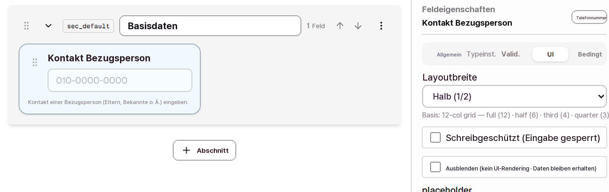
Layoutbreite — Wählen Sie zwischen Voll · Halb (1/2) · 1/3 · 1/4.
Das Eingabefeld auf dem Canvas wird halb so breit. Auf dem verbleibenden Platz derselben Zeile werden andere Felder angeordnet.
Basis: 12-col grid — wie der Bildschirmhinweis sagt: „full (12) · half (6) · third (4) · quarter (3)“.
Zu beachten
Unbedingt prüfen Datenschäden · Formular nicht abschließbar
- • ⛔ Bei 1/4 wird placeholder abgeschnitten. Der Hinweistext kann länger als der Wert sein (
ex) 010 - 1234 - 5678), sodass sein Ende nicht mehr sichtbar ist. 5.4
Leicht missverständliches Verhalten
- • Bis zur halben Breite ist es unbedenklich. Die Nummer hat höchstens 13 Zeichen (
010-1234-5678) und wird auch bei schmalerem Feld nicht abgeschnitten. - • Fassen Sie das Feld mit Elementen wie Name · Beziehung in einer Zeile zusammen. Stehen zusammengehörige Elemente wie Angaben zur Bezugsperson nebeneinander, geht die Erfassung schneller.
Hinweis
- • Ohne Angabe gilt die volle Breite.
5.3Schreibgeschützt · Ausblenden
Überblick
Einstellungen, mit denen ein Feld angezeigt, aber nicht änderbar ist oder auf dem Bildschirm verborgen wird, während der Wert erhalten bleibt. Keine der beiden löscht gespeicherte Nummern.
Bildschirmbeschreibung
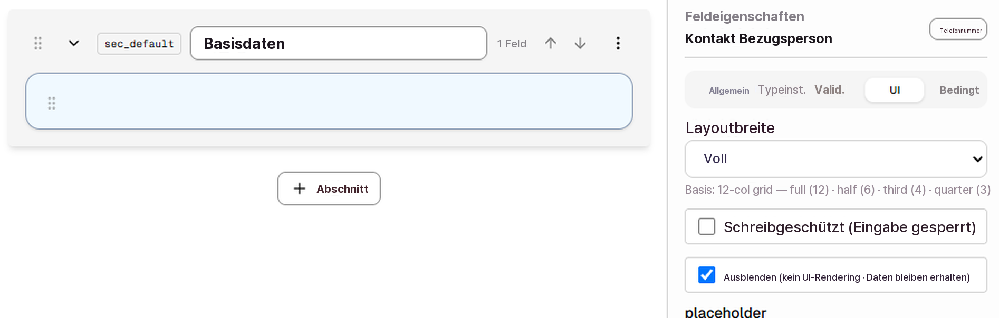
Schreibgeschützt (Eingabe gesperrt) — Wenn aktiviert, wird die Nummer angezeigt, kann vom Erfasser aber nicht korrigiert werden.
Ausblenden (kein UI-Rendering · Daten bleiben erhalten) — Wenn aktiviert, wird dieses Feld in der Eingabemaske nicht angezeigt.
Von der Karte auf dem Canvas bleibt nur ein leerer Rahmen. Weder Anzeigename noch Eingabefeld werden angezeigt.
Layoutbreite — der in 5.2 eingestellte Wert.
Zu beachten
Unbedingt prüfen Datenschäden · Formular nicht abschließbar
- • ⛔ Verbergen Sie falsch eingegebene Nummern nicht mit Ausblenden. Der Wert bleibt erhalten und ist in Export und Audit-Trail enthalten. Wurden personenbezogene Daten falsch erfasst, muss der Wert korrigiert und nicht verborgen werden. 1.1
- • Ausblenden ist kein Mittel zum Schutz personenbezogener Daten. Das rollenabhängige Verbergen von Nummern übernimmt die Maskierung des Systems; sie ist von dieser Einstellung unabhängig. 1.1
Leicht missverständliches Verhalten
- • Verwenden Sie Schreibgeschützt für Nummern, die aus anderen Quellen übernommen werden. Verwenden Sie es nicht für Elemente, die der Erfasser selbst notieren muss.
- • Um ein Feld abhängig von Bedingungen zu verbergen, verwenden Sie die bedingte Anzeige. Ausblenden in diesem Tab verbirgt das Feld immer. Kap. 6
5.4placeholder · helpText
Überblick
Legt die Hinweistexte im und unter dem Eingabefeld fest. Bei Telefonnummern funktionieren beide Stellen ordnungsgemäß — placeholder ändert die graue Schrift im Eingabefeld, helpText den Hinweis unter dem Feld.
Bildschirmbeschreibung
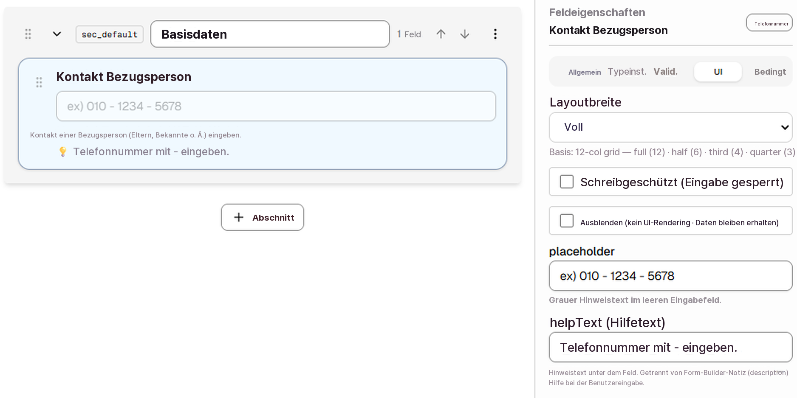
placeholder — die graue Schrift, die im leeren Eingabefeld angezeigt wird. Ohne Angabe gilt 010-0000-0000.
Die graue Schrift im Eingabefeld auf dem Canvas wird durch den eingegebenen Text ersetzt.
helpText (Hilfetext) — der Hinweistext, der unter dem Feld angezeigt wird.
Erscheint unter dem Eingabefeld zusammen mit dem Symbol 💡.
description (Hilfetext) — der in 2.1 eingegebene Text. Er ist ein anderes Element als helpText und wird ohne Symbol angezeigt.
Zu beachten
Unbedingt prüfen Datenschäden · Formular nicht abschließbar
- • ⛔ Verwenden Sie in placeholder keine Leerzeichen.
ex) 010 - 1234 - 5678in der Aufnahme hat Leerzeichen links und rechts der Bindestriche und weicht damit von der tatsächlichen Eingabeform (010-1234-5678) ab. Erfasser versuchen dann, auch die Leerzeichen einzugeben, und werden verunsichert — schreiben Sie das tatsächliche Format. - • ⛔ Der helpText in der Aufnahme ist sachlich falsch. Dort steht „Telefonnummer mit - eingeben.“, Bindestriche werden jedoch automatisch eingefügt — Erfasser müssen nur Ziffern eintippen. Dieser Hinweis verleitet eher zu unnötigen Eingaben; löschen oder ändern Sie ihn. 1.1
- • Geben Sie in helpText statt des Formats an, „wessen Nummer es ist“. Da das System das Format anpasst, ist es nützlicher, Inhalte anzugeben, die eine Beurteilung erfordern, etwa „erreichbare Uhrzeiten“ oder „Kontakte anderer Personen nur mit deren Einwilligung“.
Leicht missverständliches Verhalten
- • description und helpText werden zusammen angezeigt. Wenn Sie beide eingeben, entstehen zwei Zeilen; schreiben Sie daher nicht zweimal denselben Inhalt. 2.1
Tab „Bedingt“ — Anzeige abhängig von anderen Werten
- 6.1Bedingte Anzeige aktivieren
- 6.2Bedingung festlegen
6.1Bedingte Anzeige aktivieren
Überblick
Eine Funktion, mit der dieses Feld abhängig vom Wert eines anderen Felds angezeigt oder verborgen wird. Sie passt besonders gut zu Kontaktnummern — fragen Sie Probanden, auf die das Element nicht zutrifft, gar nicht erst nach der Nummer, werden keine unnötigen personenbezogenen Daten erhoben.
Bildschirmbeschreibung
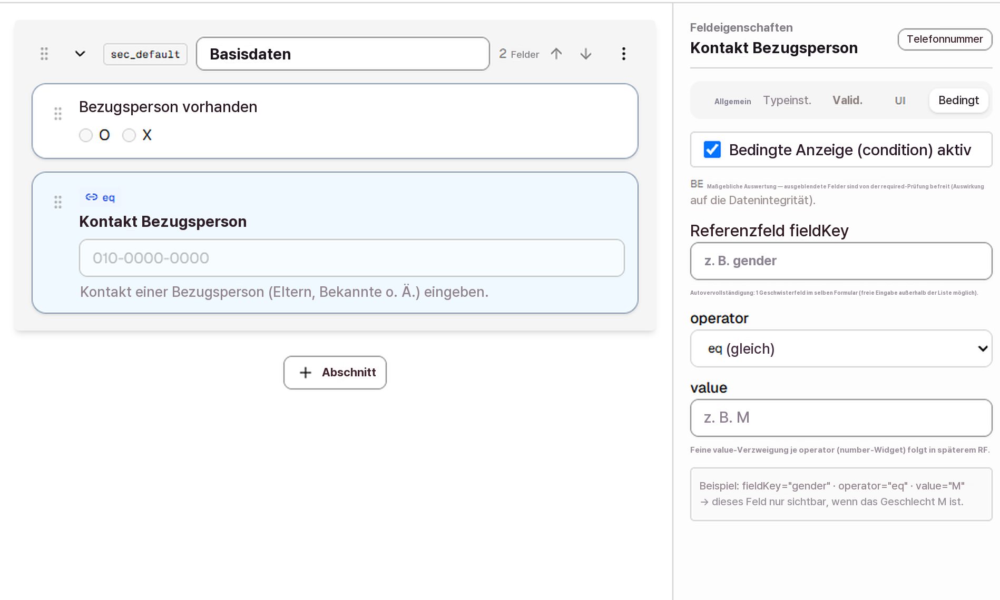
Bedingte Anzeige (condition) aktiv — Wenn aktiviert, werden die folgenden Bedingungseinstellungen angezeigt.
Über dem Feld auf dem Canvas erscheint das Badge 🔗 eq und zeigt an, dass eine Bedingung angewendet wird.
Referenzfeld fieldKey — ein anderes Feld im selben Formular, das als Grundlage der Bedingung dient. Geschwisterfelder desselben Formulars werden automatisch vervollständigt; Werte, die nicht in der Liste stehen, können Sie auch direkt eingeben.
operator — die Vergleichsart. Standard ist eq (gleich).
value — der Vergleichswert. Geben Sie den gespeicherten Wert des Referenzfelds ein. 6.2
⚠ Bildschirmhinweis — „ausgeblendete Felder sind von der required-Prüfung befreit (Auswirkung auf die Datenintegrität).“ Die Bedingung wird vom System ausgewertet.
Beispiel unten — fieldKey="gender" · operator="eq" · value="M" → dieses Feld nur sichtbar, wenn das Geschlecht M ist.
Zu beachten
Unbedingt prüfen Datenschäden · Formular nicht abschließbar
- • ⛔ Wenn Sie eine Bedingung festlegen, entfällt die Pflichtprüfung. Solange das Feld verborgen ist, weil die Bedingung nicht erfüllt ist, wird das Formular auch dann abgeschlossen, wenn das Pflichtfeld leer ist.
- • ⛔ Wird die Bedingung nach der Eingabe falsch, verschwindet die Nummer vom Bildschirm. Der Wert selbst bleibt erhalten; prüfen Sie daher zuerst die verbliebenen Nummern, wenn Sie später das zugrunde liegende Feld ändern.
Leicht missverständliches Verhalten
- • Grundsätzlich werden personenbezogene Daten nur erfragt, wenn sie nötig sind. Wird Probanden ohne Bezugsperson das Feld für die Kontaktnummer der Bezugsperson angezeigt, bleibt es leer oder es wird eine falsche Nummer eingetragen — die bedingte Anzeige verhindert beides.
Hinweis
- • Wenn Sie die Bedingung aktivieren und das Referenzfeld leer lassen, ist die Bedingung nicht erfüllt. Geben Sie unbedingt ②~④ vollständig ein. 6.2
6.2Bedingung festlegen
Überblick
Der Zustand, in dem die in 6.1 aktivierte Bedingung vollständig eingegeben ist. Mit dieser Einstellung erscheint das Eingabefeld für die Kontaktnummer nur dann auf dem Bildschirm, wenn der Wert des Felds „Bezugsperson vorhanden“ 1 ist. Da das Referenzfeld eine Einzelauswahl ist, ist der gespeicherte Wert eine Zeichenkette; wird genau dieser Wert in das Feld value eingetragen, funktioniert die Bedingung ordnungsgemäß.
Bildschirmbeschreibung
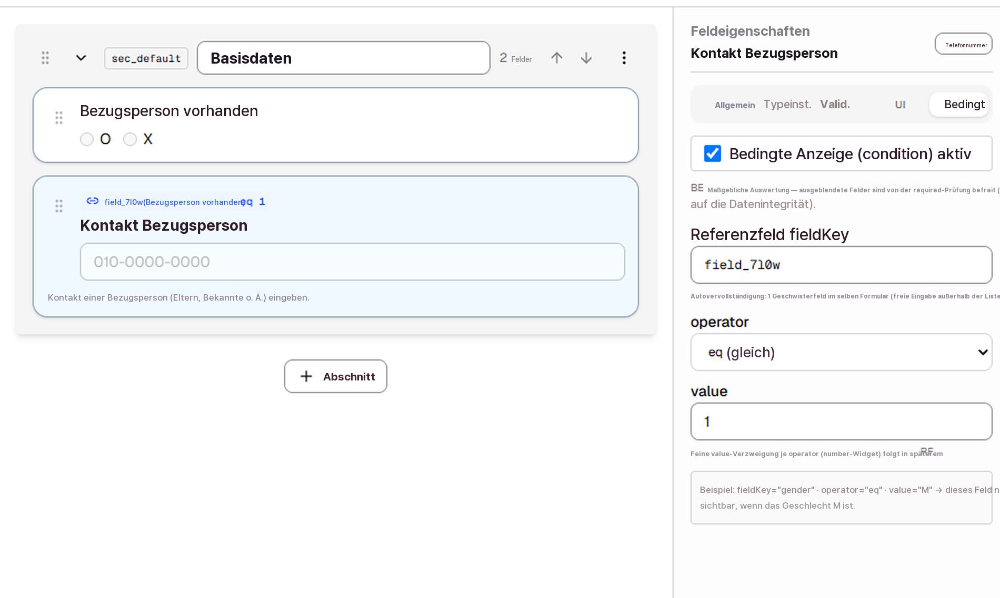
Bezugsperson vorhanden 1 istReferenzfeld fieldKey = field_7l0w — verweist auf das Feld „Bezugsperson vorhanden“ im selben Formular.
Ergebnis nach Eingabe von ①~③ — das Badge auf dem Canvas wird zu 🔗 field_7l0w(Bezugsperson vorhanden) eq 1 konkretisiert.
operator = eq (gleich)
value = 1 — geben Sie nicht das auf dem Bildschirm sichtbare O, sondern den gespeicherten Wert dieser Option ein.
⚠ Bildschirmhinweis — „ausgeblendete Felder sind von der required-Prüfung befreit (Auswirkung auf die Datenintegrität).“
Beispiel unten — fieldKey="gender" · operator="eq" · value="M" → dieses Feld nur sichtbar, wenn das Geschlecht M ist.
Zu beachten
Unbedingt prüfen Datenschäden · Formular nicht abschließbar
- • ⛔ In value geben Sie nicht den angezeigten Text, sondern den gespeicherten Wert ein. Wenn Sie
Oeintragen, ist die Bedingung nie erfüllt, und das Feld für die Kontaktnummer wird überhaupt nicht angezeigt. Prüfen Sie zuerst den gespeicherten Wert in der Optionsliste des referenzierten Felds. - • ⛔ Wird der gespeicherte Wert des Referenzfelds geändert, bricht die Bedingung unbemerkt. Ändern Sie den gespeicherten Wert von
1aufY, ist diese Bedingung ohne Fehlermeldung einfach nicht mehr erfüllt — deshalb ist eine Änderung gespeicherter Werte nach der Veröffentlichung riskant. - • Dieselbe Beziehung können Sie auch als Validierungsregel 4.3 erstellen. Setzen Sie beides, entsteht eine Doppelung: Es wird nicht gefragt und zugleich das Speichern blockiert; verwenden Sie daher nur eine der beiden Möglichkeiten.
Leicht missverständliches Verhalten
- • Prüfen Sie die Einstellung anschließend in der Vorschau. Ändern Sie dabei den Bezugswert und prüfen Sie, ob das Eingabefeld tatsächlich erscheint und verschwindet.
Anhang
- 7.1Einstellungen je Tab auf einen Blick
- 7.2Unbedingt merken · Nicht behandelt
7.1Einstellungen je Tab auf einen Blick
Einstellungen je Tab
| Tab | Element | Was wird festgelegt | Abschnitt |
|---|---|---|---|
| Allgemein | fieldKey | Tatsächlicher Speicherschlüssel des Werts (nach dem Speichern nicht ändern) | 2.1 |
| label (Anzeigename) | Auf dem Bildschirm angezeigter Elementname — angeben, wessen Nummer es ist | 2.1 | |
| description (Hilfetext) | Ergänzende Beschreibung unter dem Eingabefeld — in welcher Situation die Nummer verwendet wird | 2.1 | |
| Pflichtfeld | Ob eine Eingabe zwingend ist (das Format wird nicht geprüft) | 2.2 | |
| SDV-Verifizierung | Ob Ziel des CRA-Quelldatenabgleichs (Konflikt mit Maskierung beachten) | 2.3 | |
| AE-Bedeutungsrolle | Dieser Typ kann nicht zugeordnet werden | 1.1 | |
| „Nicht gemessen“ zulassen | Mittel, um „nicht mitgeteilt“ festzuhalten — bei diesem Typ besonders nötig | 2.4 | |
| Typeinstellungen | (Typspezifische Einstellungen) | Keine — das Format legt das System fest | 3.1 |
| Standardwert (defaultValue) | Vorzubelegende Nummer (möglichst leer lassen · direkt auf dem Canvas sichtbar) | 3.2 | |
| Validierung | ruleType | Regelart — Format (Regex) oder Vergleich mit anderem Feld | 4.2 · 4.3 |
| expression | Regulären Ausdruck einschließlich Bindestrichen schreiben (^01\d-\d{3,4}-\d{4}$) | 4.2 | |
| message | Text, der Benutzern bei Verstoß angezeigt wird — nicht leer lassen | 4.3 | |
| Bei Verstoß · Aktiv | Vergleich mit anderem Feld ist auf Speichern blockieren festgelegt · Regel aktiv · inaktiv | 4.3 | |
| UI | Layoutbreite | Breite im 12-col grid (bis zur halben Breite unbedenklich) | 5.2 |
| Schreibgeschützt | Anzeigen, aber keine Korrektur zulassen | 5.3 | |
| Ausblenden | Keine Anzeige auf dem Bildschirm (gespeicherte Nummern bleiben erhalten) | 5.3 | |
| placeholder · helpText | Beide funktionieren ordnungsgemäß — Standard-placeholder ist 010-0000-0000 | 5.4 | |
| Bedingt | Bedingung aktiv | Ob bedingte Anzeige verwendet wird (von der Pflichtprüfung befreit) | 6.1 |
| Referenzfeld fieldKey | Feld im selben Formular als Grundlage der Bedingung | 6.2 | |
| operator · value | Vergleichsart und Vergleichswert (gespeicherten Wert eingeben) | 6.2 |
Regeln für automatische Bindestriche
| Vorwahl | Anzahl Ziffern | Angezeigte Form |
|---|---|---|
Seoul (02) | 9 Stellen | 02-123-4567 |
| 10 Stellen | 02-1234-5678 | |
Sonstige (010 · Ortsvorwahlen u. a. mit 3 Stellen) | 10 Stellen | 010-123-4567 |
| 11 Stellen | 010-1234-5678 | |
| Ziffern über die Stellenzahl hinaus | Werden nicht verworfen, sondern bleiben unverändert in der letzten Gruppe |
7.2Unbedingt merken · Nicht behandelt
Unbedingt merken
Unbedingt prüfen Datenschäden · Formular nicht abschließbar
- • Telefonnummern sind personenbezogene Daten. Erfassen Sie nur unbedingt nötige Kontaktnummern und fragen Sie Probanden, auf die das Element nicht zutrifft, per bedingter Anzeige gar nicht erst. 1.1 · 6.1
- • Schreiben Sie reguläre Ausdrücke einschließlich der Bindestriche. Da der gespeicherte Wert
010-1234-5678lautet, lehnt ein Ausdruck, der nur Ziffern annimmt, alle korrekten Eingaben ab. 4.2 - • Legen Sie keinen Standardwert fest. Eine Beispielnummer ist formal korrekt, wird von keiner Validierung erfasst und unverändert gespeichert. 3.2
- • Wenn Sie das Feld als Pflichtfeld festlegen, aktivieren Sie zusätzlich die Erklärung „Nicht gemessen“. Andernfalls tragen Erfasser Scheinnummern ein. 2.2 · 2.4
- • Auch bei fehlenden Stellen wird gespeichert. Der automatische Bindestrich ist keine Formatprüfung — um eine vollständige Nummer zu verlangen, ist eine Validierungsregel nötig. 4.1
- • Lassen Sie message nicht leer. „Vergleich mit anderem Feld“ ist auf Speichern blockieren festgelegt; fehlt der Text, erfährt der Erfasser den Grund nicht. 4.3
Leicht missverständliches Verhalten
- • Bindestriche werden automatisch eingefügt. Ein Hinweis, „mit - einzugeben“, ist unnötig — Erfasser müssen nur Ziffern eintippen. 5.4
- • Es gilt nur das koreanische Format. Müssen ausländische Nummern erfasst werden, verwenden Sie den Typ einzeiliger Text. 3.1
- • Der Standardwert ist direkt in der Bearbeitungsansicht sichtbar. Anders als bei Wahr/Falsch · Einzelauswahl müssen Sie nicht zur Vorschau wechseln. 3.2
Hinweis
- • Ausblenden ist kein Mittel zum Schutz personenbezogener Daten. Das rollenabhängige Verbergen von Nummern übernimmt die Maskierung des Systems. 5.3
Nicht in diesem Dokument behandelt
※ Auswahl des Ländercodes — im System zwar definiert, in der Erstellungsansicht gibt es jedoch kein Element dafür. Derzeit gilt nur das koreanische Format; eine Unterscheidung der Formate nach Land wird nicht angeboten. 3.1
Festlegung von zulässiger Stellenzahl · Ortsvorwahl — im Tab „Typeinstellungen“ gibt es kein Element dafür. Um die Stellenzahl zu erzwingen, verwenden Sie Format (Regex) im Tab „Validierung“. 3.1 · 4.2
Automatische Berechnung (calculation) — das Element wird im Tab „Typeinstellungen“ angezeigt, bei diesem Typ aber nicht verwendet. Da diese Funktion Werte per Formel berechnet, verwenden Sie sie beim Typ Zahl. 3.1
AE-Bedeutungsrolle — das Element ist im Tab „Allgemein“ vorhanden, dieser Typ kann jedoch nicht zugeordnet werden. Ordnen Sie sie einem Ja/Nein- oder Einzelauswahlfeld zu. 1.1
Rollenabhängige Maskierungsregeln — wem eine Nummer wie verborgen angezeigt wird, gehört zum Bereich der Berechtigungseinstellungen und wird nicht in diesen Tabs festgelegt. 1.1 · 5.3